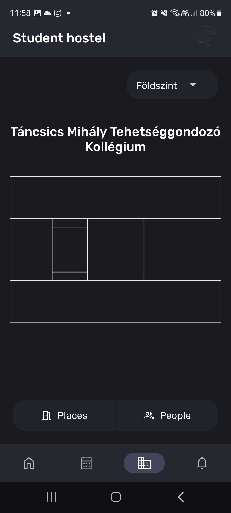
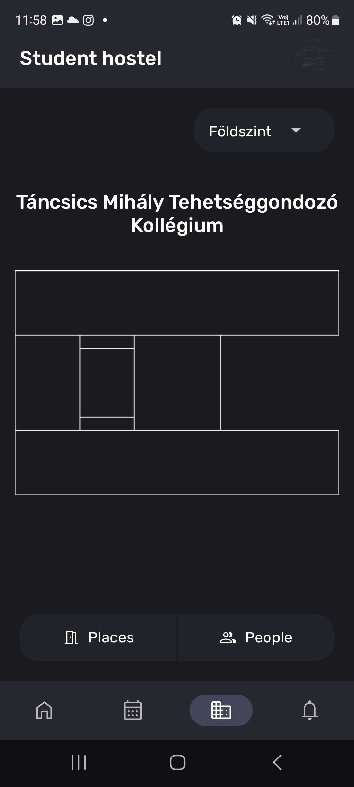
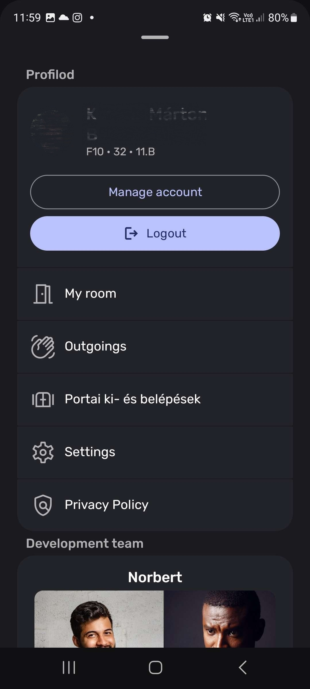
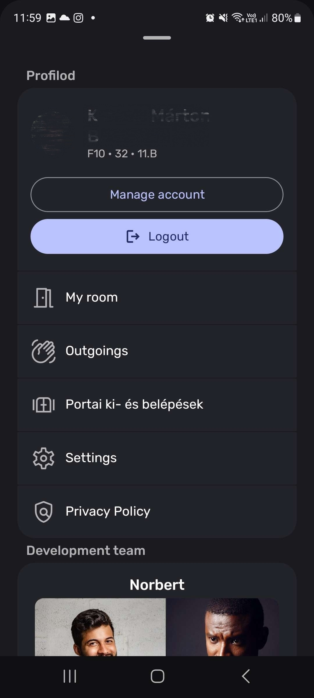
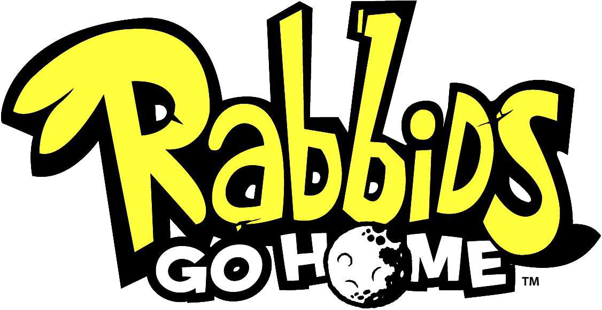

Marci's old website
I am Marci, 16 years old. I'm currently studying in the one and only BMSZC Puskás Tivadar Távközlési és Informatikai Technikum. I spend most of my free time with programming and when I can I'm working on a 3D survival game, on Undercave. My hobbies also include image editing, graphic designing, video editing, animating, exploring the world, Kick-boxing and of course playing video games. I also became interested in UI and UX.
I've been interested in programming since I was little, at first I only used scratch, but then I switched to Unity. Yes from Scratch I jumped into Unity. I'm currently working on a new game, it's called UnderCave
In addition to programming, I also edit images, do graphic design, edit videos, animate and design UI, UX.
This is one of my main project and my dream game, but it's on pause because of a really big school and student hostel project. This game is a 3D survival game. I don't want to say too much about it yet, but if you're interested, join my Discord server and subscribe to my dev channel.
The plan is to create a more advanced, automated, digital student hostel system. There are currently 5 of us working on this. The point is that the content of the students' booklet, the teachers' diary, gate arrivals and leaves, and all other data that is necessary for the harmonious operation of the student hostel can be managed and read on a mobile app, desktop application and a website on a clean interface.
 

 

(The reason I'm censoring the profile picture in the screenshot, because it's a person that has nothing to do with us.)
In this game, you take on the role of a YouTuber, Zoltán Berek, with whom you have to save your viewers, as an evil brushcutter wants to destroy them because you no longer make brushcutter videos with him. However, the Great Brushcutter is not alone. He has revived many other brushcutter to prevent you from your rescue mission. (I know, the story is very deep.)


If you're interested, you can check it out in Android or in Windows.
This is my first relatively big game, so don't expect much from it. (The game promises updates, but I do not.)
I mainly create normal and political memes, and sometimes even gameplays or game trailers

In an alternative universe
(only people that fallows Hungarian
politics can understand this)

Orbang Vixtor
(Hungarian Prime Minister
as Mao Ce-tung)

Orbán Viktor anime (Hungarian Prime Minister)

Drip Orbán Viktor (Hungarian Prime Minister)
Ralix logo (My logo)

School without trees
(Picture of my school with the trees edited out)
I'm a big Nintendo fan, Mario games are my favorites.
|
Not only is it still my favorite to this day, but it was also the very first serious game I played on the Nintendo Wii. I still have the original console and the CD to this day. But I don't use it anymore, because I can produce much better quality with emulation. But I have it! Don't sue me! This is a 3D Mario platformer game, one of the huge differences from other 3D platformers is that the gravity is almost never only downwards (in the Y coordinate). Either we are on small planets, where gravity constantly pulls us towards the center, or we are on all kinds of other interesting shapes with their own gravity, but sometimes there are also separate gravitational fields, where everything might turn upside down, but for example in other places gravity changes to a rhythm, etcetera. Another interesting thing about the game is that at the beginning of the story, we get a special Luma star, which provides a spin attack ability, which can be activated by shaking the Wii remote control. This will keep us up in the air for a few secs, but you can also destroy and break all kinds of things or even change the layout of some of the stages with each shake. The game also contains new power ups, enemies and NPCs. I wholeheartedly recommend it to those who like 3D platformers. |

|
|
This is a Nintendo Wii platformer game too, but this one was made by Ubisoft. I also have this on CD, and at the moment I have to play it on that too, because for some reason it is not a popular game, so the emulator is not optimized for it (or idk) and I's horribly slow, while other games run perfectly smooth. In this game you play with 3 crazy Rabbids from many. The game has quite an interesting story, if I understood correctly, they sleep on spherical streetlamps and one night they noticed the moon, which they thought was also a lamp, except that it was huge. They came up with a plan to build a huge tower to reach it. But since they don't have enough materials for it, they have come up with the idea of stealing everything they can from people and using it to build the tower. The interesting thing about the game is that you can't jump in it, because you rob the humanity with a shopping cart with another rabbid in it. Overall a very crazy but funny game with very creative levels. |


|
|
I first started playing this game with my dad on our old XP PC. In this game, you have to use a bunch of strange little goo balls to build bridges, towers and all kind of shapes, but not like in the usual bridge building games and here nothing drives over it after we are done. There is a starting point and you have to build some tipe of bridge with the balls to a pipe. These balls are constantly crawling on our bridge or on the map until we use them for the construction. One of the goals of the game is to use as few balls as possible, because the rest is sucked up by the pipe, which we can then use to build a huge tower in a separate map The game is full of creative levels and has a very interesting and deep story. |

|
|
I discovered this game when I was still in elementary school. I don't remember from where, but I really enjoyed it. This is a 3D puzzle game from Valve. The main idea in the game is that you have a portal gun, with which you can shoot two portals at specific places, which you can then go through, and thus you have to solve all kinds of puzzles. The game later introduces buttons, cubes that can be placed on buttons for example, launchers, all kinds of liquids that pass through your portals and much more. The game is very long and full of unexpected twists and turns, the story is very elaborate. |
|
|
This was also a game I played a lot with my dad when I was a little. This game is essentially a tower defense game fundamentally reimagined. Zombies come from the right and you have to plant plants that shoot them. There are 3 locations in the game, each of them has night and day versions, which always change the gameplay a little. New plants and new zombies are constantly being unlocked during the game, so you can't get bored. Even mini-games are unlocked as you progress on the game, so there will still be content after you finish the story mode. It's a classic |

|
|
I bought this game as soon as I bought my VR. I still play when I have time and the game has some new interesting content This is a virtual reality game where you have to rhythmically cut the cubes flying towards you in the direction of the arrows that appear on them with the sword of the color of the cube. (huh) You can play it alone or with friends or even with strangers online. The game has great graphics, it's very good at lighting. If you buy a VR, this should be the first game you play with |

|
|
Free fighting anime game. When I absolutely can't do anything at all, that's when I play it |
|
I am usually online. If you can, reach me on Discord by the name Marci599#7342 or on email katona.m.b@gmail.com